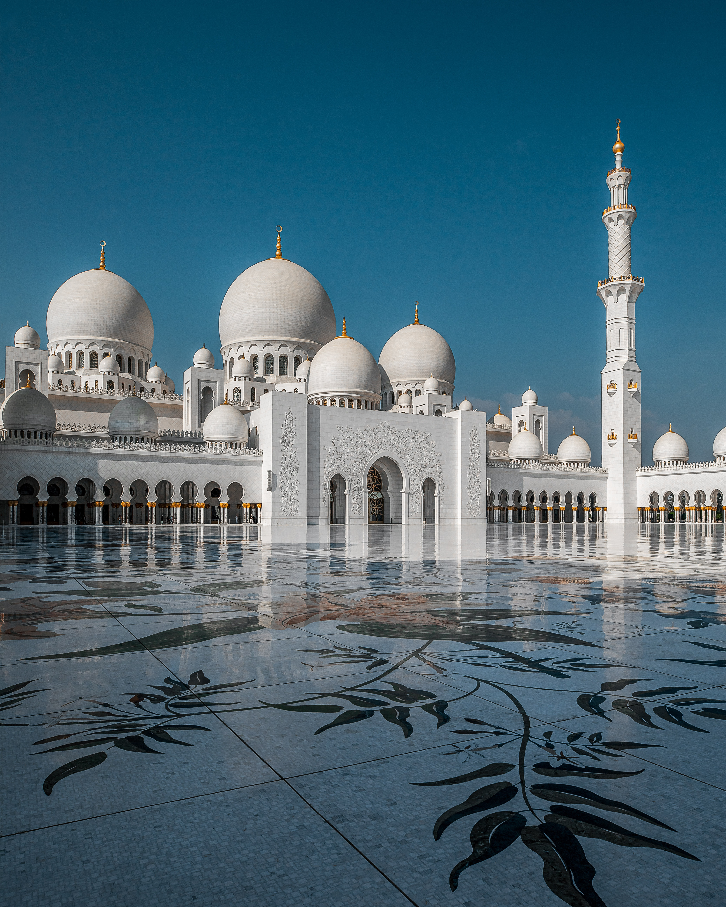

The .img-rounded class adds rounded corners to an image (not available in IE8):

The .img-thumbnail class creates a thumbnail of the image:
The .img-responsive class makes the image scale nicely to the parent element (resize the browser window to see the effect):
